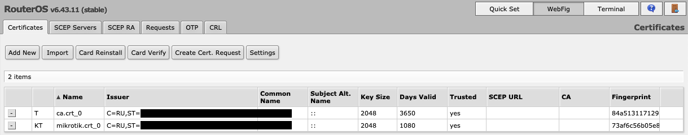
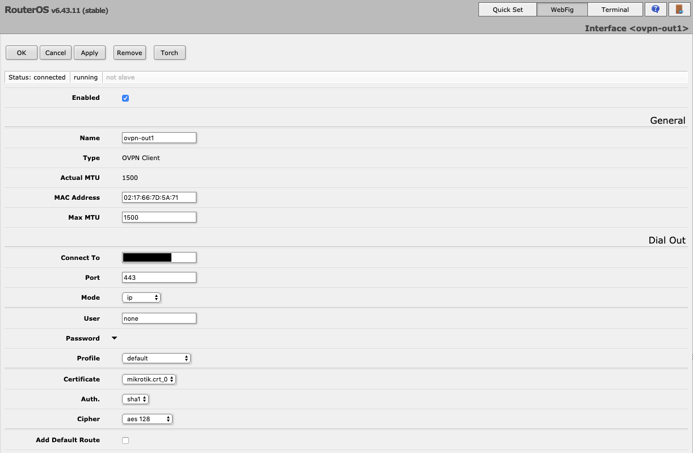

How to Automate OpenVPN Server Deployment and User Management
{kind=link}
Recently I’ve been tasked to come up with a VPN solution which must support: - All major desktop and mobile OSes as clients - Clients behind NAT - Mikrotik RouterOS as a client - Site-to-site and remote access VPNs
First, I had to decide whether it will be a dedicated hardware appliance or software running on a VM. The latter was more appealing because of its flexibility and ease of deployment.
Second, I needed to choose the actual software. The following options were considered: - IPSEC implementations such as FreeSWAN, OpenSWAN or strongSWAN - OpenVPN - SoftEther
OpenVPN was chosen because of its huge user base, cross-platform client support, and extensive customization options.
Of course, I decided to adopt the “infrastructure as code” approach from the start so my solution could be easily reproduced and shared across my team in the future. Once again Ansible was my weapon of choice when it came to picking an automation tool. I did some googling and came across a couple of ready-made setups on Github, namely ansible-openvpn and ansible-openvpn-hardened (the former being a fork of the latter). I liked the approach of ansible-openvpn more and used it as a starting point for my own project. I needed some extra features that’s why I couldn’t use that repo as it was.
Setting up Ansible
- Install Ansible following the official installation guide
- Clone my GitHub repo and cd to ansible-ovpn-mikrotik
- Copy the sample inventory and variables files to edit for your setup. (I will use
my_projectas an example for the rest of this post)
cp -r inventories/sample inventories/my_project
- Edit inventories/my_project/hosts.ini to target your desired host.
Ansible uses SSH keys for authentication. You need to copy your public key to the target host in order for Ansible to work. The easiest way to do it is ssh-copy-id utility. Run
ssh-copy-id ansible_user@target_host
where ansible_user is the username Ansible runs as on the target host.
You also need to supply ansible_become_pass which Ansible “enters” when sudoing. Please, consider using Ansible Vault to avoid storing user passwords in cleartext.
Sample network topology
To illustrate what I was trying to achieve with OpenVPN I drew this simple network topology.
{kind=link}
I have an OpenVPN server attached to 10.5.0.0/16 subnet and 172.16.0.0/12 subnet behind the Mikrotik router. Both subnets should be accessible by remote users.
The 192.168.x.x/24 networks are used for tunnel interfaces. More on that later.
Setting variables
Before running any of the playbooks you need to edit inventories/my_project/group_vars/all.yml file. Almost all options are well commented in the file itself. However, some parameters demand a more comprehensive explanation.
| Parameter | Description |
|---|---|
openvpn_server_common_name_manual |
OpenVPN server CN used in certificates. Will be generated automatically if not defined. I prefer to set this manually. |
openvpn_instances |
You can describe several OpenVPN instances here which will run simultaneously on the same host. I use this to create two separate instances: one listening on UDP/1194 for remote clients, and the other listening on TCP/443 for Mikrotik router which doesn't support UDP. Also, remote clients behind restrictive firewalls also can use TCP instance. |
server_extra_options |
This can be used to supply extra options to the server config. For example, you can use route option to add a route to the server's routing table or push route to propagate static routes to the clients. |
client_extra_options |
Use this to pass extra options to the clients configs. For example, you can set a DNS server for clients to use with dhcp-option DNS <ip> option. |
valid_clients |
This list of users is read by sync_clients.yml playbook to add and remove clients. You must at least set the name parameter to define a user. To add any custom options for a particular client specify ccd parameter. I use ccd to define networks behind the Mikrotik router with iroute option. Please, refer to the openvpn man page for details about the --client-config-dir option. |
load_iptables_rules |
If you apply install.yml playbook to the freshly installed system I recommend setting this option to true. However, when applying to the existing installation consider checking the playbooks/roles/openvpn/templates/etc_iptables_rules.v4.j2 file first. |
Installing OpenVPN
Now you can try and run the install playbook by issuing this command:
Sample output is shown below.$ ansible-playbook -i inventories/my_project/hosts.ini playbooks/install.yml
PLAY [Install required software, configure and harden] *************************************************************************************************************************************************************************************************************************
TASK [OpenVPN | install | Install python2 if necessary] ************************************************************************************************************************************************************************************************************************
The authenticity of host '10.5.202.10 (10.5.202.10)' can't be established.
ECDSA key fingerprint is SHA256:Rl4wWtHZESb5F6wfqxF3s+FhDp9GdAZDlBq1/nRJlNw.
Are you sure you want to continue connecting (yes/no)? yes
ok: [10.5.202.10]
TASK [OpenVPN | install | Gather facts after python2 is available] *************************************************************************************************************************************************************************************************************
ok: [10.5.202.10]
TASK [openvpn : OpenVPN | Install | Set Distro/Version specific variables] *****************************************************************************************************************************************************************************************************
ok: [10.5.202.10] => (item=/Users/dteslya/automation/ansible-openvpn/playbooks/roles/openvpn/vars/../vars/Debian.yml)
TASK [openvpn : OpenVPN | package | Ensure the APT cache is up to date] ********************************************************************************************************************************************************************************************************
ok: [10.5.202.10]
TASK [openvpn : OpenVPN | package | Install Debian specific packages] **********************************************************************************************************************************************************************************************************
ok: [10.5.202.10] => (item=None)
TASK [openvpn : OpenVPN | package | Add debian backports] **********************************************************************************************************************************************************************************************************************
skipping: [10.5.202.10]
TASK [openvpn : OpenVPN | package | Upgrade systemd on debian] *****************************************************************************************************************************************************************************************************************
skipping: [10.5.202.10]
TASK [openvpn : OpenVPN | package | Install required packages] *****************************************************************************************************************************************************************************************************************
ok: [10.5.202.10] => (item=sudo)
changed: [10.5.202.10] => (item=python-pip)
changed: [10.5.202.10] => (item=python-virtualenv)
ok: [10.5.202.10] => (item=git)
ok: [10.5.202.10] => (item=gawk)
ok: [10.5.202.10] => (item=gnupg)
ok: [10.5.202.10] => (item=iptables)
changed: [10.5.202.10] => (item=iptables-persistent)
ok: [10.5.202.10] => (item=netfilter-persistent)
changed: [10.5.202.10] => (item=wamerican-huge)
ok: [10.5.202.10] => (item=openssl)
changed: [10.5.202.10] => (item=openvpn)
TASK [openvpn : OpenVPN | package | Install pexpect via pip] *******************************************************************************************************************************************************************************************************************
changed: [10.5.202.10]
TASK [openvpn : OpenVPN | PKI | EasyRSA Checkout] ******************************************************************************************************************************************************************************************************************************
changed: [10.5.202.10]
TASK [openvpn : OpenVPN | PKI | Make local destination folder] *****************************************************************************************************************************************************************************************************************
changed: [10.5.202.10 -> localhost]
TASK [openvpn : OpenVPN | PKI | Generate a random server common name] **********************************************************************************************************************************************************************************************************
skipping: [10.5.202.10]
TASK [openvpn : OpenVPN | PKI | Set server common name] ************************************************************************************************************************************************************************************************************************
changed: [10.5.202.10]
TASK [openvpn : OpenVPN | PKI | Register the OpenVPN server common name] *******************************************************************************************************************************************************************************************************
ok: [10.5.202.10]
TASK [openvpn : OpenVPN | PKI | Generate CA password] **************************************************************************************************************************************************************************************************************************
changed: [10.5.202.10]
TASK [openvpn : OpenVPN | PKI | Store CA password] *****************************************************************************************************************************************************************************************************************************
changed: [10.5.202.10 -> localhost]
TASK [openvpn : OpenVPN | PKI | Set CA password variable] **********************************************************************************************************************************************************************************************************************
skipping: [10.5.202.10]
TASK [openvpn : OpenVPN | PKI | Set common name variable] **********************************************************************************************************************************************************************************************************************
ok: [10.5.202.10]
TASK [openvpn : OpenVPN | PKI | Set server key and cert path variables] ********************************************************************************************************************************************************************************************************
ok: [10.5.202.10]
TASK [openvpn : OpenVPN | PKI | EasyRSA Link project] **************************************************************************************************************************************************************************************************************************
[WARNING]: Cannot set fs attributes on a non-existent symlink target. follow should be set to False to avoid this.
changed: [10.5.202.10]
TASK [openvpn : OpenVPN | PKI | Deploy vars configuration] *********************************************************************************************************************************************************************************************************************
changed: [10.5.202.10]
TASK [openvpn : OpenVPN | PKI | Intialize PKI] *********************************************************************************************************************************************************************************************************************************
changed: [10.5.202.10]
TASK [openvpn : OpenVPN | PKI | Build CA] **************************************************************************************************************************************************************************************************************************************
changed: [10.5.202.10]
TASK [openvpn : OpenVPN | PKI | Build CRL] *************************************************************************************************************************************************************************************************************************************
changed: [10.5.202.10]
TASK [openvpn : OpenVPN | PKI | Add server] ************************************************************************************************************************************************************************************************************************************
changed: [10.5.202.10]
TASK [openvpn : OpenVPN | PKI | Build ta.key] **********************************************************************************************************************************************************************************************************************************
changed: [10.5.202.10]
TASK [openvpn : OpenVPN | PKI | Build dh.pem] **********************************************************************************************************************************************************************************************************************************
changed: [10.5.202.10]
TASK [openvpn : OpenVPN | Add Clients | Get CA cert] ***************************************************************************************************************************************************************************************************************************
changed: [10.5.202.10]
TASK [openvpn : OpenVPN | sysctl | Enable IPv4 traffic forwarding] *************************************************************************************************************************************************************************************************************
changed: [10.5.202.10]
TASK [openvpn : OpenVPN | Configuration | Create client configuration directory] ***********************************************************************************************************************************************************************************************
changed: [10.5.202.10]
TASK [openvpn : OpenVPN | Configuration | Copy OpenVPN server configuration files into place] **********************************************************************************************************************************************************************************
changed: [10.5.202.10] => (item={'proto': 'udp', 'port': 1194, 'mask': '192.168.68.0 255.255.255.0', 'cidr': '192.168.68.0/24', 'server_extra_options': ['push "redirect-gateway def1"'], 'client_extra_options': []})
TASK [openvpn : OpenVPN | systemd | Enable services] ***************************************************************************************************************************************************************************************************************************
changed: [10.5.202.10] => (item={'proto': 'udp', 'port': 1194, 'mask': '192.168.68.0 255.255.255.0', 'cidr': '192.168.68.0/24', 'server_extra_options': ['push "redirect-gateway def1"'], 'client_extra_options': []})
TASK [openvpn : OpenVPN | Firewall | Reread ansible_default_ipv4] **************************************************************************************************************************************************************************************************************
ok: [10.5.202.10]
TASK [openvpn : OpenVPN | Firewall | Flush existing firewall rules] ************************************************************************************************************************************************************************************************************
ok: [10.5.202.10]
TASK [openvpn : OpenVPN | Firewall | Write iptables rules file] ****************************************************************************************************************************************************************************************************************
changed: [10.5.202.10]
TASK [openvpn : OpenVPN | Firewall | Load iptables rules] **********************************************************************************************************************************************************************************************************************
ok: [10.5.202.10]
RUNNING HANDLER [openvpn : start openvpn] **************************************************************************************************************************************************************************************************************************************
changed: [10.5.202.10] => (item={'proto': 'udp', 'port': 1194, 'mask': '192.168.68.0 255.255.255.0', 'cidr': '192.168.68.0/24', 'server_extra_options': ['push "redirect-gateway def1"'], 'client_extra_options': []})
PLAY RECAP *********************************************************************************************************************************************************************************************************************************************************************
10.5.202.10 : ok=33 changed=22 unreachable=0 failed=0
$ systemctl status openvpn@udp-1194
● openvpn@udp-1194.service - OpenVPN connection to udp-1194
Loaded: loaded (/lib/systemd/system/openvpn@.service; indirect; vendor preset: enabled)
Active: active (running) since Thu 2019-02-21 12:20:22 UTC; 3 days ago
Docs: man:openvpn(8)
https://community.openvpn.net/openvpn/wiki/Openvpn24ManPage
https://community.openvpn.net/openvpn/wiki/HOWTO
Main PID: 30925 (openvpn)
Status: "Initialization Sequence Completed"
Tasks: 1 (limit: 1111)
CGroup: /system.slice/system-openvpn.slice/openvpn@udp-1194.service
└─30925 /usr/sbin/openvpn --daemon ovpn-udp-1194 --status /run/openvpn/udp-1194.status 10 --cd /etc/openvpn --script-security 2 --config /etc/openvpn/udp-1194.conf --writepid /run/openvpn/udp-1194.pid
Warning: Journal has been rotated since unit was started. Log output is incomplete or unavailable.
Managing client keys
The list of currently valid clients is kept in inventories/my_project/group_vars/all.yml. A typical user entry looks like this:
ccd string entirely if you don't need any custom options for the client.
After adding some clients you can run the sync_clients.yml playbook. At some point it will list clients to add and/or delete and ask you whether to proceed.
$ ansible-playbook playbooks/sync_clients.yml -i inventories/my_project/hosts.ini
PLAY [Sync desired valid clients with OpenVPN's current PKI] *******************************************************************************************************************************************************************************************************************
TASK [Gathering Facts] *********************************************************************************************************************************************************************************************************************************************************
ok: [10.5.202.10]
TASK [sync_clients : OpenVPN | Sync Clients | Register the OpenVPN server common name] *****************************************************************************************************************************************************************************************
ok: [10.5.202.10]
TASK [sync_clients : OpenVPN | Sync Clients | Set server common name variable] *************************************************************************************************************************************************************************************************
ok: [10.5.202.10]
TASK [sync_clients : OpenVPN | Sync Clients | Get clients that are currently valid] ********************************************************************************************************************************************************************************************
ok: [10.5.202.10]
TASK [sync_clients : OpenVPN | Sync Clients | Get list of desired valid clients] ***********************************************************************************************************************************************************************************************
ok: [10.5.202.10]
TASK [sync_clients : OpenVPN | Sync Clients | Set facts] ***********************************************************************************************************************************************************************************************************************
ok: [10.5.202.10]
TASK [sync_clients : OpenVPN | Sync Clients | Sync clients that will be revoked] ***********************************************************************************************************************************************************************************************
ok: [10.5.202.10]
TASK [sync_clients : OpenVPN | Sync Clients | Sync clients that will be added] *************************************************************************************************************************************************************************************************
ok: [10.5.202.10]
TASK [sync_clients : OpenVPN | Sync Clients | Ask user if we should proceed] ***************************************************************************************************************************************************************************************************
[sync_clients : OpenVPN | Sync Clients | Ask user if we should proceed]
We will add ['user1', 'user2'] and we will revoke []. Press 'Y' or 'y' to proceed:
ok: [10.5.202.10]
TASK [sync_clients : OpenVPN | Sync Clients | Abort if user does not want to proceed] ******************************************************************************************************************************************************************************************
skipping: [10.5.202.10]
TASK [OpenVPN | Sync Clients | Add clients] ************************************************************************************************************************************************************************************************************************************
TASK [add_clients : OpenVPN | Add Clients | Set variables] *********************************************************************************************************************************************************************************************************************
ok: [10.5.202.10]
TASK [add_clients : OpenVPN | Add Clients | Register the OpenVPN server common name] *******************************************************************************************************************************************************************************************
ok: [10.5.202.10]
TASK [add_clients : OpenVPN | Add Clients | Set server common name variable] ***************************************************************************************************************************************************************************************************
ok: [10.5.202.10]
TASK [add_clients : OpenVPN | Add Clients | Check for existing private key passwords] ******************************************************************************************************************************************************************************************
ok: [10.5.202.10 -> localhost] => (item=user1)
ok: [10.5.202.10 -> localhost] => (item=user2)
TASK [add_clients : OpenVPN | Add Clients | Generate private key passwords] ****************************************************************************************************************************************************************************************************
changed: [10.5.202.10] => (item=None)
changed: [10.5.202.10] => (item=None)
changed: [10.5.202.10]
TASK [add_clients : OpenVPN | Add Clients | Make local destination] ************************************************************************************************************************************************************************************************************
changed: [10.5.202.10 -> localhost] => (item=user1)
changed: [10.5.202.10 -> localhost] => (item=user2)
TASK [add_clients : OpenVPN | Add Clients | Write private key pass phrases] ****************************************************************************************************************************************************************************************************
changed: [10.5.202.10 -> localhost] => (item=None)
changed: [10.5.202.10 -> localhost] => (item=None)
changed: [10.5.202.10]
TASK [add_clients : OpenVPN | Add Clients | Read private key pass phrases] *****************************************************************************************************************************************************************************************************
ok: [10.5.202.10 -> localhost] => (item=None)
ok: [10.5.202.10 -> localhost] => (item=None)
ok: [10.5.202.10]
TASK [add_clients : OpenVPN | Add Clients | Build Clients] *********************************************************************************************************************************************************************************************************************
changed: [10.5.202.10] => (item=None)
changed: [10.5.202.10] => (item=None)
changed: [10.5.202.10]
TASK [add_clients : OpenVPN | Add Clients | Make client configuration directory] ***********************************************************************************************************************************************************************************************
ok: [10.5.202.10]
TASK [add_clients : OpenVPN | Add Clients | Register CA certificate contents] **************************************************************************************************************************************************************************************************
ok: [10.5.202.10]
TASK [add_clients : OpenVPN | Add Clients | Register HMAC firewall key contents] ***********************************************************************************************************************************************************************************************
ok: [10.5.202.10]
TASK [add_clients : OpenVPN | Add Clients | Register client key contents] ******************************************************************************************************************************************************************************************************
ok: [10.5.202.10] => (item=None)
ok: [10.5.202.10] => (item=None)
ok: [10.5.202.10]
TASK [add_clients : OpenVPN | Add Clients | Register client certificate contents] **********************************************************************************************************************************************************************************************
ok: [10.5.202.10] => (item=None)
ok: [10.5.202.10] => (item=None)
ok: [10.5.202.10]
TASK [add_clients : OpenVPN | Add Clients | Build client configs (.ovpn files; pki embedded)] **********************************************************************************************************************************************************************************
changed: [10.5.202.10] => (item=None)
changed: [10.5.202.10] => (item=None)
changed: [10.5.202.10]
TASK [add_clients : OpenVPN | Add Clients | Build client configs (.ovpn files; pki external files)] ****************************************************************************************************************************************************************************
changed: [10.5.202.10] => (item=None)
changed: [10.5.202.10] => (item=None)
changed: [10.5.202.10]
TASK [add_clients : OpenVPN | Add Clients | Get list of clients with ccd defined] **********************************************************************************************************************************************************************************************
ok: [10.5.202.10]
TASK [add_clients : OpenVPN | Add Clients | Build ccd configs] *****************************************************************************************************************************************************************************************************************
TASK [add_clients : OpenVPN | Add Clients | Build client configs (.ovpn files; external pkcs12)] *******************************************************************************************************************************************************************************
changed: [10.5.202.10] => (item=None)
changed: [10.5.202.10] => (item=None)
changed: [10.5.202.10]
TASK [add_clients : OpenVPN | Add Clients | Generate PKCS#12] ******************************************************************************************************************************************************************************************************************
changed: [10.5.202.10] => (item=None)
changed: [10.5.202.10] => (item=None)
changed: [10.5.202.10]
TASK [add_clients : OpenVPN | Add Clients | Get .ovpn files (*-pki-embedded.ovpn)] *********************************************************************************************************************************************************************************************
changed: [10.5.202.10] => (item=user1)
changed: [10.5.202.10] => (item=user2)
TASK [add_clients : OpenVPN | Add Clients | Get .ovpn files (*-pki-files.ovpn)] ************************************************************************************************************************************************************************************************
changed: [10.5.202.10] => (item=user1)
changed: [10.5.202.10] => (item=user2)
TASK [add_clients : OpenVPN | Add Clients | Get .ovpn files (*-pkcs12.ovpn)] ***************************************************************************************************************************************************************************************************
changed: [10.5.202.10] => (item=user1)
changed: [10.5.202.10] => (item=user2)
TASK [add_clients : OpenVPN | Add Clients | Get client PKCS#12 files] **********************************************************************************************************************************************************************************************************
changed: [10.5.202.10] => (item=user1)
changed: [10.5.202.10] => (item=user2)
TASK [add_clients : OpenVPN | Add Clients | Get client CA cert] ****************************************************************************************************************************************************************************************************************
changed: [10.5.202.10] => (item=user1)
changed: [10.5.202.10] => (item=user2)
TASK [add_clients : OpenVPN | Add Clients | Get client certs] ******************************************************************************************************************************************************************************************************************
changed: [10.5.202.10] => (item=user1)
changed: [10.5.202.10] => (item=user2)
TASK [add_clients : OpenVPN | Add Clients | Get client keys] *******************************************************************************************************************************************************************************************************************
changed: [10.5.202.10] => (item=user1)
changed: [10.5.202.10] => (item=user2)
TASK [add_clients : OpenVPN | Add Clients | Clear bash history] ****************************************************************************************************************************************************************************************************************
ok: [10.5.202.10]
TASK [OpenVPN | Sync Clients | Revoke clients] *********************************************************************************************************************************************************************************************************************************
skipping: [10.5.202.10]
PLAY RECAP *********************************************************************************************************************************************************************************************************************************************************************
10.5.202.10 : ok=36 changed=15 unreachable=0 failed=0
fetched_creds\<target_hostname>\<username> directory:
<username>-pkcs12.ovpn # user configuration pointing to .p12 file
<username>-pki-embedded.ovpn # all-in-one user configuration file (contains ca.crt, .crt and .key)
<username>-pki-files.ovpn # user configuration pointing to .crt and .key files
<username>.crt # user certificate
<username>.key # private key
<username>.p12 # user cert and key in PFX format
ca.crt # CA certificate
<server_CN>_pk_pass.txt # private key password
If you want to delete a client just remove the corresponding entry in inventories/my_project/group_vars/all.yml and re-run the playbook.
You cannot delete and then re-enable a user. When you add a user with the same username you have deleted before a new certificate will be generated and you will have to resend it to the user.
Configuring Mikrotik
To configure Mikrotik router as an OpenVPN client perform the following actions:
- Go to Files - Upload and upload the following files to the router:
.crt.keyca.crt
- Go to System - Certificates and import all the files from the previous step. Specify the password from
<server_CN>_pk_pass.txtfor the.keyfile. You should get something like this: -
Go to Interfaces press Add New and select OVPN Client type. Specify the following parameters (must match the parameters listed in
openvpn_instances):- Connect To
- Port
- User: none
- Certificate
- Auth.
- Cipher
 If everything is ok you should get the "Status: connected | running" string.
-
Configure static routes and masquerading if needed.
{kind=link}
{kind=link}
In order for OpenVPN server to route networks behind the Mikrotik router you need to provide two options in the server configuration, namely route and iroute. The first one is specified within the server_extra_options list in the server instance description and the second one - in the ccd attribute of the mikrotik user in inventories/my_project/group_vars/all.yml.
You can read about the roles of route, iroute and push route options in this article.
As a result, you should have something like this in your all.yml for the Mikrotik to work:
openvpn_instances:
- {
proto: tcp,
port: 443,
mask: "192.168.70.0 255.255.255.0",
cidr: "192.168.70.0/24",
server_extra_options: ['route 172.16.0.0 255.240.0.0', 'push "route 172.16.0.0 255.240.0.0"'],
client_extra_options: [],
}
valid_clients:
- name: mikrotik
ccd: ['iroute 172.16.0.0 255.240.0.0']
You may have noticed that 172.16.0.0 network is specified three times. According to this configuration, a route to this network should be installed on the Mikrotik pointing to the OpenVPN server (push route) and another route for the same network should be installed in the server routing table effectively creating a routing loop. But according to OpenVPN logic when the same network is specified with both push route and iroute options the latter takes precedence and the former is ignored. Indeed, why push a route to the client which owns that network. When other clients (with no iroute in ccd) connect to this instance, they get the route to 172.16.0.0 network and can communicate with hosts behind the Mikrotik.
Windows 10 DNS issue
There is a known issue with Windows 10 not using DNS servers specified in .ovpn config. You can overcome this either by adding block-outside-dns to client's ccd or by changing the VPN-adapter default metric.
Conclusion
I hope you found this article useful. Please, leave a comment if you have any suggestions or found any inaccuracies.